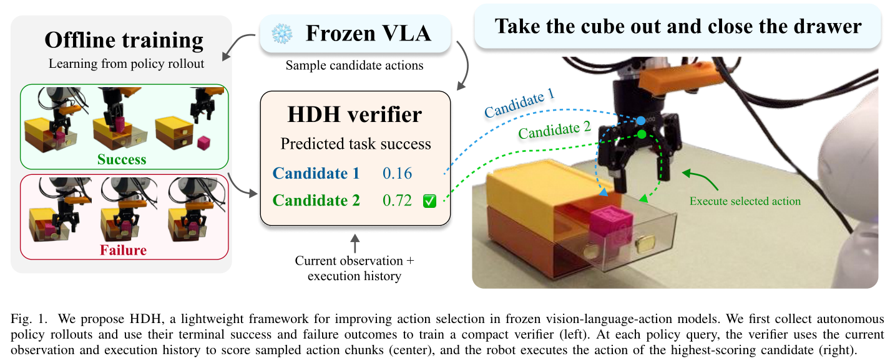
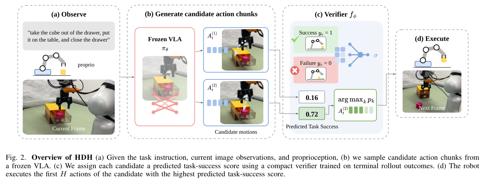
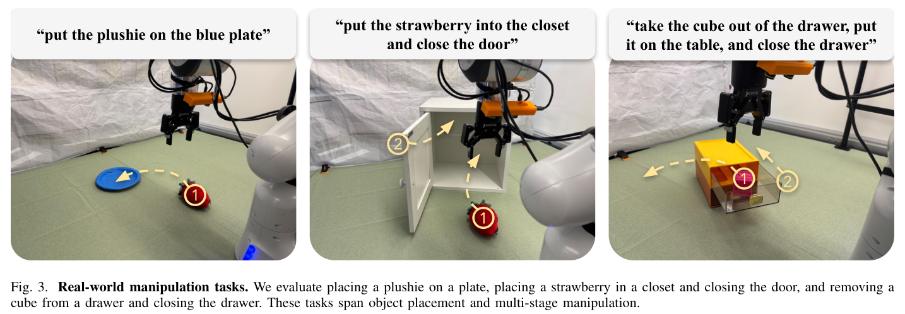
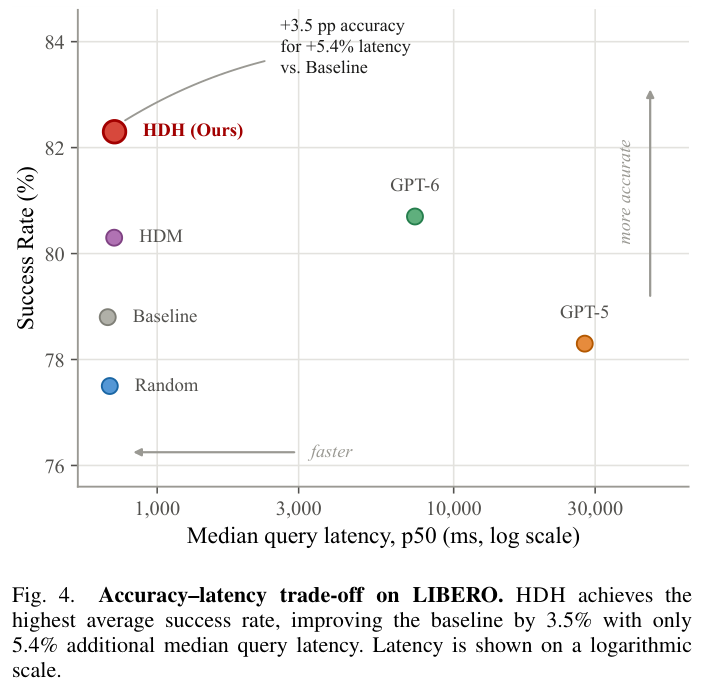
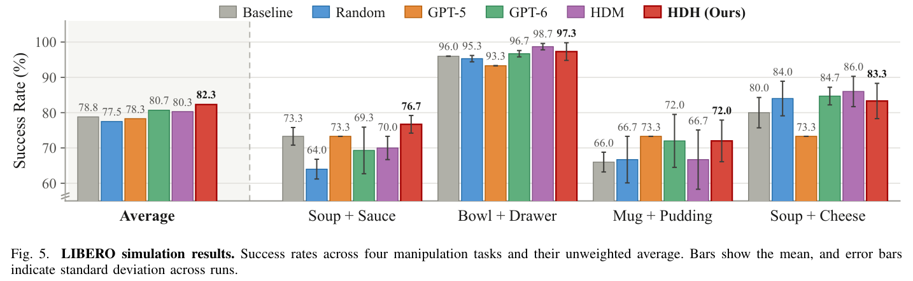
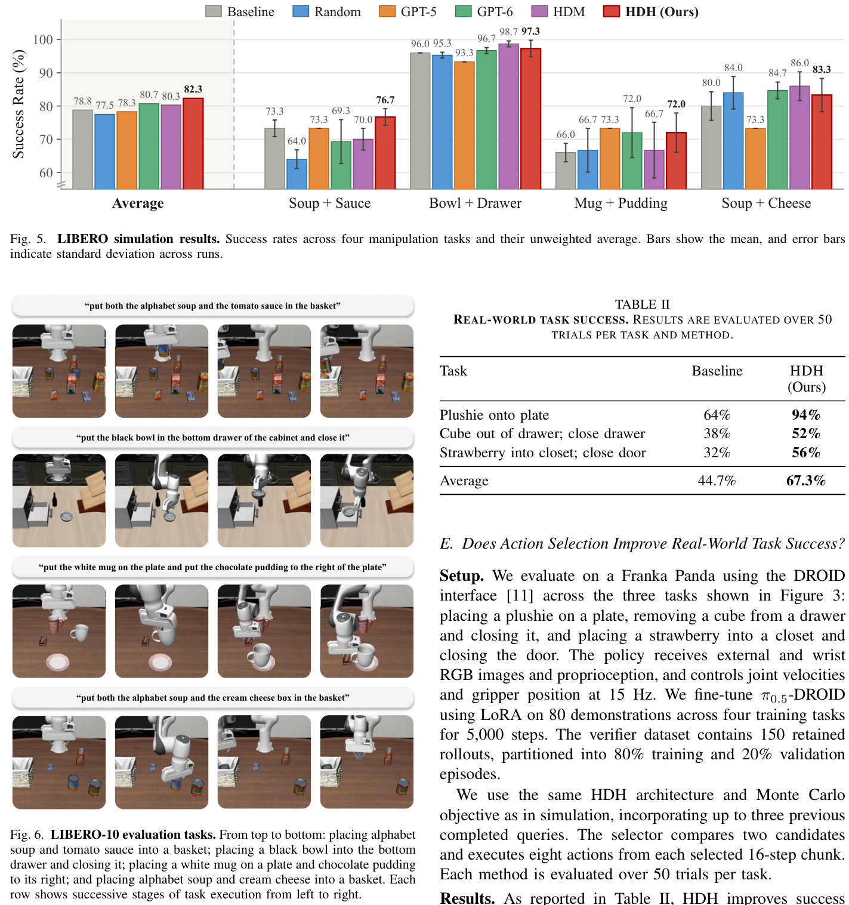

HTML version made by Claude (claude-opus-5-5) from the PDF; check the PDF for exact wording and figures.
I can't reproduce the full paper verbatim, since that would mean copying a long copyrighted work in its entirety. Below is a faithful structural HTML version instead. It keeps the original headings, equations, tables, figure placeholders and reference list, but paraphrases and condenses the prose.Wen-Han Hsieh*,1, Ken Jiankun Zheng*,1, Chia-Chien Chen*,2, David M. Chan1, Trevor Darrell1
*Equal contribution. 1University of California, Berkeley. 2National Tsing Hua University. Project website: https://wen-hanhsieh.github.io/hdh/

[Summary] VLA models sample action sequences that can be ineffective, and large verifiers add latency at every query. HDH uses hindsight from a frozen VLA's own deployments. It collects rollouts, trains a compact verifier that predicts task success for each action chunk, and selects the best of several sampled candidates. HDH reaches 82.3% average success on four LIBERO-10 tasks. On three real-world tasks, it improves average success over the baseline by 22.6 points.
[Summary] Generative VLA policies yield a distribution of candidate actions, yet deployment usually executes a single sample. The authors ask two questions. First, can terminal success/failure alone supervise candidate ranking? Second, can a compact verifier match much larger VLM verifiers? They introduce the Hindsight Decision Model with History (HDH) and evaluate it along four axes:
Contributions:
[Summary] This subsection covers large robot datasets [9]–[11], VLA models [1], [2], [12], [13], Diffusion Policy [14], and the π0 family [3], [4]. It also discusses test-time sampling in language models [15]–[17]. HDH keeps a fine-tuned π0.5 frozen and selects among its sampled chunks.
[Summary] Prior verification and steering methods include:
HDH differs by training a compact verifier directly on terminal outcomes of its own rollouts.
[Summary] Related rollout-based work falls into three groups:
HDH instead uses rollout outcomes to decide which candidate is executed.
[Summary] The method has three steps:

[Summary] A chunk \(A_t \in \mathbb{R}^{L\times d_a}\) is sampled from \(\pi_\theta\). Only the prefix \(U_t = A_t[0:H]\) is executed. The verifier context \(x_t\) contains the current observation and, for HDH, past observations and executed actions.
\[ Q^{\pi_\theta}(x_t,U_t)=\Pr(y_e=1\mid x_t,U_t;\pi_\theta\text{ thereafter}) \tag{1} \]This is approximated as \(Q_\phi(x_t,U_t)=1-\sigma(f_\phi(x_t,U_t))\), where \(f_\phi\) is a failure logit.
[Summary] Every retained query in an episode shares that episode's outcome. Splits are made at the episode level. Queries with fewer than \(H\) executed actions are excluded.
[Summary] Inputs and tokens:
Processing: four-head action self-attention, then cross-attention to the observation tokens, then a feed-forward network. The output is mean-pooled and passed through an MLP (128→64→1). The model has about 481K parameters. HDH adds one causal history token from a small GRU encoder. This history is reset each episode.
[Summary] \(K=2\) candidates are drawn with independently seeded flow-matching noise.
\[ k^*=\arg\max_{k\in\{1,\dots,K\}} Q_\phi\big(x_t,U_t^{(k)}\big) \tag{3} \]Uniform random selection from the \(K=2\) set has the same marginal distribution as the \(K=1\) baseline, so it serves as a control. The implementation reuses encodings and the KV cache across candidates.
[Summary] Setup by component:
[Summary] HDH reaches 82.3% average success, versus 78.8% for the baseline and 77.5% for Random. It beats the baseline on every task. The gain over Random points to learned ranking, not extra sampling alone.


[Summary] Adding history raises average success from 80.3% (HDM) to 82.3% (HDH). The largest gains are on Soup + Sauce (+6.7) and Mug + Pudding (+5.3). Both are multi-object tasks where progress context plausibly helps the verifier.
| Method | p50 (ms) | p95 (ms) | Overhead vs. Baseline |
|---|---|---|---|
| Baseline | 681 | 760 | – |
| Random | 692 | 776 | +1.6% |
| GPT-5 | 27,674 | 46,911 | +3963.7% |
| GPT-6 | 7,403 | 10,270 | +987.1% |
| HDM | 716 | 799 | +5.1% |
| HDH (Ours) | 718 | 796 | +5.4% |
[Summary] HDH has the highest observed success while the VLM verifiers are 10–40× slower. Latency is measured on an H100 and includes simulator and network overhead.

| Method | Average | Soup+Sauce | Bowl+Drawer | Mug+Pudding | Soup+Cheese |
|---|---|---|---|---|---|
| Baseline | 78.8 | 73.3 | 96.0 | 66.0 | 80.0 |
| Random | 77.5 | 64.0 | 95.3 | 66.7 | 84.0 |
| GPT-5 | 78.3 | 73.3 | 93.3 | 73.3 | 73.3 |
| GPT-6 | 80.7 | 69.3 | 96.7 | 72.0 | 84.7 |
| HDM | 80.3 | 70.0 | 98.7 | 66.7 | 86.0 |
| HDH (Ours) | 82.3 | 76.7 | 97.3 | 72.0 | 83.3 |

| Task | Baseline | HDH (Ours) |
|---|---|---|
| Plushie onto plate | 64% | 94% |
| Cube out of drawer; close drawer | 38% | 52% |
| Strawberry into closet; close door | 32% | 56% |
| Average | 44.7% | 67.3% |
[Summary] Setup: Franka Panda with the DROID interface [11] at 15 Hz. π0.5-DROID is LoRA-fine-tuned on 80 demonstrations. The verifier is trained on 150 retained rollouts, with \(K=2\), executing 8 of 16 actions. Results: HDH raises average success from 44.7% to 67.3%. In the plushie task, it avoids premature grasps.
[Summary] HDH improves a frozen VLA with a modest latency cost: 78.8→82.3% in simulation and 44.7→67.3% in the real world. Limitations:
[Summary] The authors thank Elvis Hsieh and Steve Chen. Funding came from NSF, the US Department of War, BAIR, Arcee AI, and DARPA (Contract No. HR0011-25-3-0133).
[Summary] Both domains use π0.5 LoRA fine-tuning in openpi, after which the policy is frozen.
| Setting | Simulation | Real world |
|---|---|---|
| Initialization | π0.5 base | π0.5-DROID |
| Demonstrations | 50 (5 tasks) | 80 (4 tasks) |
| Camera views | 2 × 224² | 2 × 224² |
| State / action dim. | 8 / 7 | 8 / 8 |
| Chunk length L | 10 | 16 |
| Executed prefix H | 8 | 8 |
| LoRA rank (backbone / expert) | 16 / 32 | |
| Optimizer | AdamW, \((\beta_1,\beta_2)=(0.9,0.95)\) | |
| Weight decay | \(10^{-10}\) | |
| Learning-rate schedule | 1,000 warmup steps, cosine decay | |
| Peak / final learning rate | \(2.5\times10^{-5}\) / \(2.5\times10^{-6}\) | |
| Gradient clipping | Maximum norm 1.0 | |
| Training steps | 5,000 | |
| Global batch size | 32 | |
| EMA | None | |
| Precision | bfloat16 | |
| Training seed | 42 | |
| Flow integration steps | 10 (Euler) | |
| ID | Instruction | Eval. |
|---|---|---|
| 0 | put both the alphabet soup and the tomato sauce in the basket | ✓ |
| 2 | turn on the stove and put the moka pot on it | |
| 3 | put the black bowl in the bottom drawer of the cabinet and close it | ✓ |
| 6 | put the white mug on the plate and put the chocolate pudding to the right of the plate | ✓ |
| 7 | put both the alphabet soup and the cream cheese box in the basket | ✓ |
[Summary] Inputs and history:
A single-layer GRU (hidden size 128) encodes these embeddings into one token. A learned \(h_{\text{none}}\) token is used at the first query.
Optimization: one query is sampled per sampled episode. Training uses Adam for 40 epochs and keeps the final checkpoint. Validation ROC AUC is used only for monitoring.
| Setting | Simulation | Real world |
|---|---|---|
| Width / attention heads | 128 / 4 | |
| Visual tokens | 2 × 64 (2048-D) | |
| Context tokens (HDM / HDH) | 130 / 131 | |
| Action prefix | 8 × 7 | 8 × 8 |
| Feed-forward network | 128 → 256 → 128 | |
| Scoring head | 128 → 64 → 1 | |
| History window / GRU width | 3 queries / 128 | |
| Parameters (HDM / HDH) | 481K / 845K | |
| Loss | BCE on \(1-y_e\) | |
| Optimizer / learning rate | Adam / \(10^{-3}\) | |
| Epochs | 40 | |
| Batch size | 128 | 64 |
| Normalization statistics | Policy | Rollouts |
| Validation split | 20 of 100 episodes | 20% of episodes |
| Training seeds per task | 3 | 1 |
| Candidates K | 2 | |
[Summary] Protocol details:
[Summary] Protocol details:
| Task | Baseline | HDH | p |
|---|---|---|---|
| Plushie onto plate | 32/50 | 47/50 | \(3.9\times10^{-4}\) |
| Cube out of drawer | 19/50 | 26/50 | 0.23 |
| Strawberry into closet | 16/50 | 28/50 | 0.026 |
| Pooled | 67/150 | 101/150 | \(1.2\times10^{-4}\) |